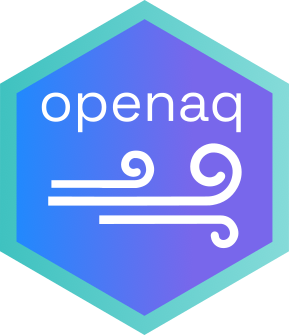

Contributing to the OpenAQ R client
Source:CONTRIBUTING.md
We welcome contributions to the OpenAQ R client! Here’s a guide on how to contribute effectively:
Code of Conduct
Please review and adhere to our Code of Conduct: https://github.com/openaq/.github/blob/main/CODE_OF_CONDUCT.md]
Reporting Issues and Questions
- Search for Existing Issues: Before creating a new issue, search the existing issues to see if your problem has already been reported.
- Use Issue Templates: When reporting bugs or proposing features, please use one of the provided issue templates:
- Bug Report: Clearly describe the bug, including steps to reproduce it.
- Feature Request: Explain the desired feature and its benefits.
For General Questions
The issue tracker is primarily for reporting bugs and requesting features. For general questions, discussions, or seeking help, please visit the project discussions: https://github.com/openaq/openaq-r/discussions
Submitting Pull Requests
- Fork the OpenAQ R client repository to your GitHub account.
- Create a new branch for your feature or bug fix.
- Make your changes and commit them with clear, concise commit messages.
- Push your branch to your forked repository.
- Create a pull request from your branch to the main repository.
- Ensure that your pull request is linked to an existing issue. (Pull requests must be linked to an existing issue.)
Pull Request Guidelines
- Adhere to Coding Standards: Follow the existing coding style and conventions.
- Write Clear Commit Messages: Use clear and concise commit messages that describe the changes made.
- Add Tests: Write unit tests to cover your changes.
- Document Your Changes: Update the documentation if necessary.
- Be Patient and Respectful: Be patient and respectful of other contributors.
Additional Tips
- Start Small: If you’re new to open source, start with small contributions like fixing typos or improving documentation.
- Ask Questions: Feel free to ask questions on the project discussions forum.
- Be Proactive: Be proactive in addressing feedback and making improvements to your pull request.
By following these guidelines, you can help make the OpenAQ R client even better!